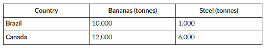

Before we learn about economic theories, what is Canada’s trading relationship with the world? In Economics, many theories and models are used to explain economic concepts. Your task is to understand why countries trade.
Watch this video to identify arguments for why trade is good for economies.
Callout
Even though there are sound economic arguments for trade, there are also arguments against trade. Protectionism represents any attempt to impose restrictions on trade in goods and services.
As you have seen throughout this course, economists often use mathematical examples to illustrate theories. This is also true of the argument for trade. In the opening, you learned about Ricardo’s theory of comparative advantage. He noted that while one country can produce all of its needs, it may incur a high opportunity cost. Let us take the example of Canada and Brazil.
Brazil is the second largest producer of bananas globally, and Canada is a large steel producer. Each of these countries could produce both products, but at what (opportunity) cost? They should produce one of these products and trade for the other, but let us prove it mathematically.
The chart below would show each country's total production if they only produced these two goods using their resources. Canada has an absolute advantage in producing both goods, so they do not need to trade, but let us look more closely.

Callout
Canada can produce more of each good, but when we look at the opportunity cost, there is a difference. We want to look at the ratio of steel to bananas to see the opportunity cost.
For each tonne of steel Brazil produces, they give up 10 tonnes of bananas (10,000/1,000 = 10), while Canada only gives up 2 tonnes of bananas (12,000/6,000 = 2).
Canada can produce more of each good, but when we look at the opportunity cost, there is a difference. We want to look at the ratio of steel to bananas to see the opportunity cost.
For each tonne of steel Brazil produces, they give up 10 tonnes of bananas (10,000/1,000 = 10), while Canada only gives up 2 tonnes of bananas (12,000/6,000 = 2).
On the contrary, for each tonne of bananas Brazil produces, they give up 0.1 tonnes of steel (1,000/10,000 = 0.1), while Canada gives up 0.5 tonnes of steel (6,000/12,000 = 0.5).
Thus, Canada has a higher opportunity cost when producing bananas, and Brazil has a higher cost of producing steel. It makes sense for Brazil to produce bananas and Canada to produce steel and trade. By moving the resources currently used for the less efficient product to the more efficient one, there will be more of each product produced.